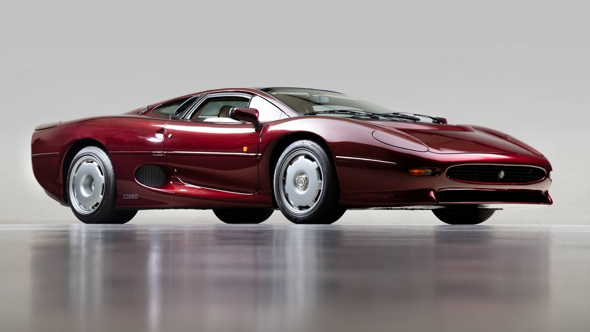
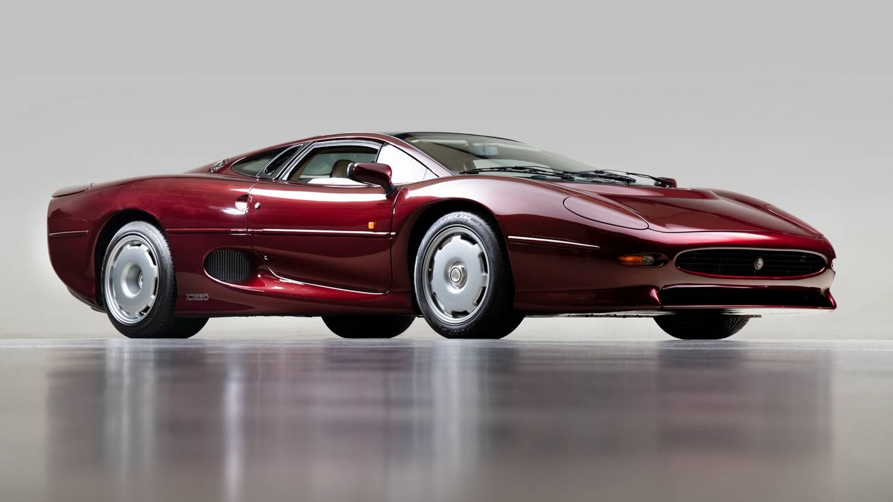

Toyota Supra
A Toyota Supra a japán Toyota autógyár orrmotoros, hátsókerék-hajtású sportautó modellje. 1978-tól több generáció készült.A Toyota legújabb modellje a Toyota GR Supra
Az első két generáció a Toyota Celica tervei alapján készült, de hosszabb és szélesebb volt nála, ekkoriban a modell teljes neve még Toyota Celica Supra volt. Az 1986-os év közepén jelent meg a Supra harmadik generációja, mely már nem a Toyota Celica tervei alapján készült és a neve is csak egyszerűen Toyota Supra lett, a Celica előtag nélkül. Ennek ellenére még ekkor is volt hasonlóság a két modell között, így gyakran összetévesztették őket. Az első, második és harmadik generációs Suprákat Taharában, a negyedik generációs modelleket Toyota Cityben szerelték össze. 2019-től a Toyota az egykori Supra modellen alapuló új Toyota GR Supra modellt hoz forgalomba.
A Suprának nemcsak a Celicával vannak közös vonásai, hanem a Toyota 1967 és 1970 között gyártott modelljével, a Toyota 2000GT-vel is. A legnagyobb hasonlóság a motor volt, a Supra első három generációjába a 2000GT-ben is használt M-motor továbbfejlesztett változata került. A Supra mind a négy generációjában soros hathengeres motorok voltak, és méreteik is nagyjából megegyeztek, mivel ugyanúgy a Toyota A-kódú alvázára épültek.
Mazda RX-8
A Mazda RX-8 a Mazda Motor Corporation által előállított sportautó. Először a 2001-es Észak Amerikai Nemzetközi Autó Show-n mutatkozott be. Ez az RX-7-es, szintén Wankel-motoros autó utódja.
Az RX-8 egy első-középső motor elrendezésű, hátsókerék-meghajtású 2+2 coupé. Az autó az ideális 50:50 arányú tömegelosztású.
McLaren F1
A McLaren F1 sportautó a világ leggyorsabb közúti autója volt 12 éven át, mígnem a Koenigsegg CCR (2005. február 28-án), majd rá két hónapra a Bugatti Veyron prototípusa meg nem döntötte ezt a rekordot. Végsebessége 391 km/h (amelyet a motor 7400-as percenkénti fordulatra korlátozásának kiiktatásával értek el 1998. március 31-én).
A modellt a McLaren Automotive 1992-től 1998-ig gyártotta, alapára 1 millió és 1,2 millió dollár között mozgott. Az alapötlet 1988 szeptemberében született meg a Formula 1-es monzai futamot követően, Ron Dennis és Gordon Murray között a Milánó-Linatei repülőtér várótermében. A szupersportautó főként e két ember nevéhez fűződik, valamint Peter Stevenséhez, aki Murray-vel főszerepet vállalt a jármű elkészítésében. Azt a célt tűzték ki maguk elé, hogy megépítik a világ legjobb és leggyorsabb autóját — abszolút költségspórolás nélkül —, s mindent a súly függvényében terveznek meg (az F1-nek volt a világon az első teljesen szénszál-erősítésű karosszériája). Gordon Murray ragaszkodott hozzá, hogy a motor a megbízhatóság érdekében szívó erőforrást kapjon, s legelsőnek a Hondához fordult segítségért, ámde a cég nem tudott a megadott paramétereknek megfelelő motort készíteni. A végén a BMW Motorsport részlege vállalta el az autó motorjának megépítését, amely végül a kért műszaki jellemzőktől eltérően 14%-kal erősebb és 16 kg-mal nehezebb lett. Egy olyan, száraz karteres olajkenésű erőforrást alkottak, amely rendkívül erős lett — és egyedi. Mi sem bizonyítja ezt jobban, mint hogy a motorteret hőtükör gyanánt aranyfóliával szigetelték, ami nyilvánvalóan nagyon ritka. A jármű különlegessége még a három férőhelyes utaskabin, amelyben a sofőr elöl középen ül, az utasok pedig hátrébb, kétoldalt.
Az F1-ből 1998 végéig összesen 106 db-ot készítettek — amelyekből a legtöbb utcai kiadás, de voltak módosított (F1 LM) és verseny- (F1 GTR) változatok is. A GTR versenyváltozat nem mellesleg dupla győzelmet aratott az 1995-ös Le Mans-on, ezzel mutatva az autó rendkívüli képességeit. Napjainkban a McLaren F1 a luxusautó-árveréseken a legdrágább/legtöbbet érő darabnak számít — ára akár a 8-10-szeresét is meghaladhatja az eredetiének.
Rowan Atkinson színész 2011 augusztusában Peterborough-nál törte össze büszkeségének tartott sportkocsiját. A balesetben megsérült McLaren F1 típusú utcai sportkocsijának javításáért a brit biztosítótársaság 910 ezer fontot, mintegy 320 millió forintot fizetett ki.
Jaguar XJ220
A Jaguar XJ220 egy kétüléses sportautó, amelyet a brit luxusautó-gyártó Jaguar gyártott 1992 és 1994 között, a Tom Walkinshaw Racing autó- és versenymérnöki céggel együttműködve. Az XJ220 végsebessége 212,3 mph (341. 7 km/h) a Jaguar által az olaszországi Nardo tesztpályán végzett tesztek alapján.[4] Ezzel 1992 és 1993 között a leggyorsabb szériaautó volt.
A Jaguar szerint az XJ220 prototípusa 1991-ben 7:46,36-os Nürburgringi köridőt ért el, ami gyorsabb volt, mint azelőtt bármelyik szériaautó körideje. Az XJ220 egy V12-es motorral hajtott, négy kerék-meghajtású koncepcióautóból született, amelyet a Jaguar alkalmazottainak egy szabadidejükben dolgozó informális csoportja tervezett. A csoport az 1950-es és 1960-as évek sikeres Jaguar 24 órás Le Mans-i versenyautóinak modern változatát szerette volna létrehozni, amely részt vehet az FIA B csoportos versenyein. Az XJ220 a Jaguar akkori versenyautó-családja számára végzett mérnöki munkát használta fel.
Az eredeti XJ220 koncepcióautót az 1988-as Brit Nemzetközi Autókiállításon mutatták be a nagyközönségnek, amelyet az angliai Birminghamben rendeztek meg. A pozitív fogadtatás arra késztette a Jaguart, hogy az autót gyártásba vegye. Körülbelül 1500 darab, egyenként 50 000 font értékű foglalót vettek fel, és a szállítást 1992-re tervezték. A műszaki és káros anyag-kibocsátási követelmények jelentős változásokat eredményeztek az XJ220 specifikációjában, különösen a Jaguar V12-es motorjának turbófeltöltős V6-os motorral való felváltását. A specifikációban bekövetkezett változások és a nagy teljesítményű autók iránti keresletnek az 1990-es évek eleji recesszió okozta összeomlása miatt sok vásárló úgy döntött, hogy nem él a vásárlási lehetőséggel. A gyártás befejezéséig összesen mindössze 275 darabot gyártottak, amelyek kiskereskedelmi ára 1992-ben 470 000 font volt, ami az akkori egyik legdrágább autóvá tette.


 
